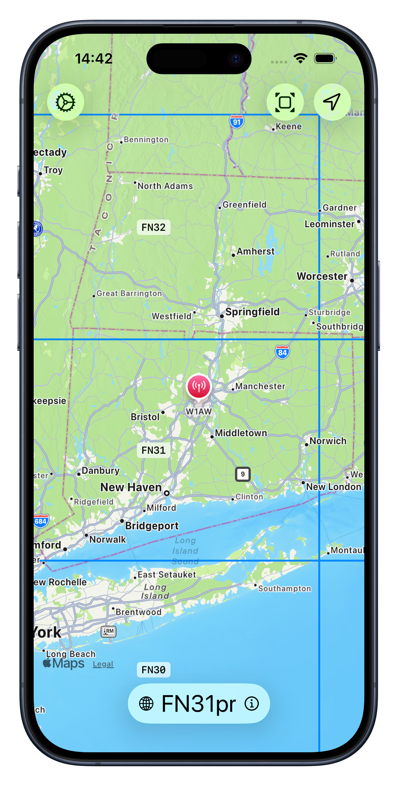
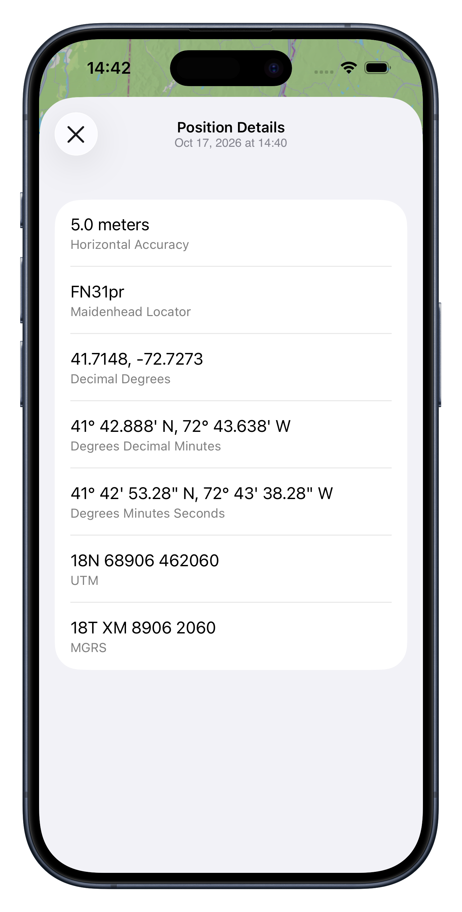

MYQTH / SUPPORT
A little help.
A clear position.
Support for MyQTH, your iOS companion for geographic coordinates and Maidenhead grid locators.
Get in touch Find an answer ↓

01 / QUICK ANSWERS
Back on the map.
Start here for common questions and a few simple things to try.
My position is missing or isn’t updating.
In iOS Settings, open Privacy & Security → Location Services. Make sure Location Services is on, then select MyQTH and allow access while using the app.
MyQTH can restore a saved position when reopened. Check the location timestamp before treating it as your current position.
My coordinates or grid locator look inaccurate.
Check MyQTH’s location permission in iOS Settings and enable Precise Location if available. Try again outdoors with a clear view of the sky, and allow time for a new location reading. Compare the horizontal accuracy and timestamp shown by the app; a saved or approximate position may produce a different grid locator.
The map is blank or slow to load.
MyQTH uses Apple Maps. Check your internet connection, then close and reopen the app. Map content may need a connection even though coordinate calculations take place on your device.
What information does MyQTH store?
Your optional callsign, preferences, and last known position are stored on your device. MyQTH does not maintain a location history or send your location to the developer. Apple Maps may communicate with Apple to load map content. Read the full privacy policy for details.
How do I remove my saved information?
Clear your callsign in the app’s settings. Revoking location permission stops new location access but does not erase the saved position. Deleting the app removes its local app data; offloading may retain it. Device backups may also contain local app data.
How do I report a bug or suggest a feature?
Email labs@thefoxrun.net. For a bug, include your MyQTH version, iOS version, device model, what happened, and what you expected. Suggestions and general questions are welcome too.
02 / DIRECT SUPPORT
Still need a hand?
Contact Ryan Clarke at Fox Run Labs for MyQTH support, feedback, feature requests, or privacy questions.
labs@thefoxrun.netHelpful details: app version, iOS version, device model, and steps to reproduce the issue. Screenshots can help—please remove coordinates, callsigns, or other personal information you don’t want to share.
Your privacy, explained.
Understand location access, local storage, and Apple Maps.
Read the privacy policy ↗License & permissions.
MyQTH’s supplied license includes the MIT permission and warranty terms.
Read the license ↗